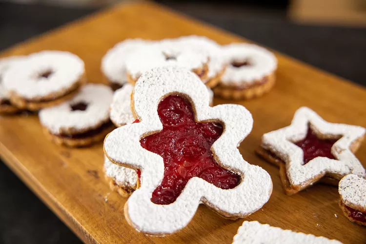

Cranberry-Ginger Linzer Torte Cookies

Recipe Credits
allrecipes - Cranberry-Ginger Linzer Torte Cookies by Carla Hall
Description
This is one of my favorite cookies for a few different reasons.
It's kind of a sandy cookie, so you get that snap.
Its warming spices play very nicely with the cranberry-ginger jam.
You can use that jam in other places, even as cranberry sauce.
You have that acidity and that little bit of sour as well as sweet.
And they're just as good right out of the freezer.
It's a great cookie with the holidays for exchanges or just to have after dinner.
Can be stored in an airtight container at room temperature for up to 3 days.
Ingredients
Cranberry-Ginger Filling
- 1 (12 ounce) package fresh cranberries
- 2 cups white sugar
- 1 medium orange, zested
- ½ cup fresh orange juice
- ¼ cup water
- 2 tablespoons grated fresh ginger root
- 1 pinch salt
Cookies
- 3 ½ cups all-purpose flour
- 1 tablespoon ground ginger
- 1 teaspoon ground cinnamon
- ½ teaspoon salt
- 1 ½ cups unsalted butter, at room temperature
- 1 cup white sugar
- 1 teaspoon vanilla extract
- ¼ cup confectioners' sugar, or as needed
Steps
- Combine cranberries, sugar, orange zest, orange juice, water, ginger, and salt for filling in a medium saucepan over medium-high heat, stirring to dissolve sugar. Lower heat and simmer, stirring frequently, until cranberries burst. Continue cooking, mashing fruit a bit with the back of a spoon, until thick as jam, about 30 minutes. Remove from heat to cool completely. Can be stored in an airtight container in the refrigerator for up to one week.
- Sift flour, ginger, cinnamon, and salt for cookies together in a medium bowl. Set aside.
- Mix butter and white sugar together in the bowl of an electric mixer fitted with a paddle attachment until just combined. Add the vanilla. Gradually add in flour mixture on low speed just until the dough starts to come together. Dump onto a piece of plastic wrap and flatten into a disk. Wrap and chill for 30 minutes.
- Roll the dough ¼-inch thick and cut into 2-inch rounds with a plain or fluted cutter. With 1/2 of the rounds, cut a hole from the middle of each round into a desired shape. Place all cookies on a parchment-lined baking sheet and chill for 15 minutes.
- While cookies chill, preheat the oven to 350 degrees F (175 degrees C).
- Bake in the preheated oven until the edges just begin to brown or the cookies are crisp, 20 to 25 minutes. Remove from the oven; let cookies cool for 1 minute on the pan, then remove to a wire rack and allow to cool completely, 15 to 20 minutes.
- When the cookies have cooled, place 1 teaspoon of filling on the flat side of each whole cookie, spreading it out to the edges with the back of the spoon. Dust the top of the cut-out cookies with confectioners' sugar. Place the sugared tops on the filled bottoms.